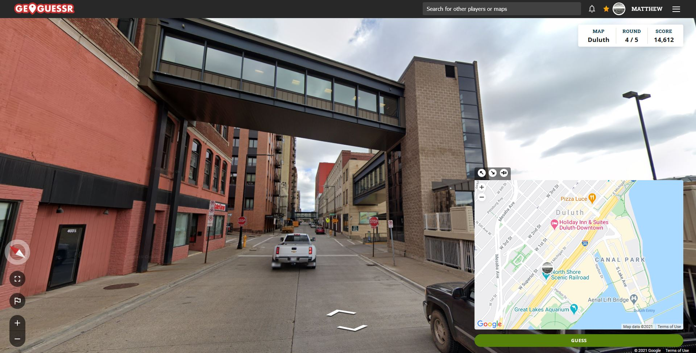
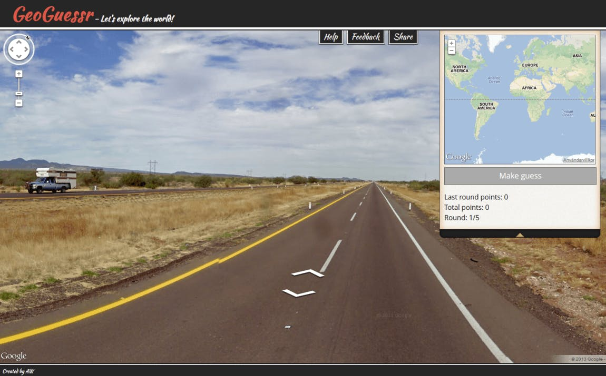

About the game: GeoGuessr is an engaging geography game that challenges players to identify locations around the world using Google Street View. Players are dropped into a random spot and must use visual clues—like signs, landscapes, and architecture—to guess where they are. With options for solo or multiplayer modes, GeoGuessr offers a fun way to explore diverse maps and enhance geographical knowledge while competing for points.
..